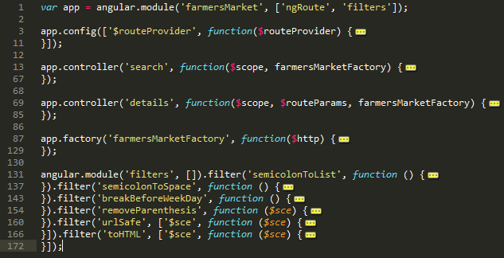

What is AngularJS?
AngularJS, commonly referred to as Angular, is an open-source web application framework, maintained by Google and the community, that assists with creating single-page applications, which consist of one HTML page with CSS and JavaScript on the client side. Its goal is to simplify both development and testing of web applications by providing client-side model–view–controller (MVC) capability as well as providing structure for the entire development process, from design through testing.
Wikipedia on AngularJSDiagram Flows

Features
Directives
Extension of html functionality
<div id="blankResults" ng-if="!search.loading && !search.results">
Two-way data binding
Display object values directly into the page
<div ng-repeat="results in search.results">
{{ results.marketname }}
</div>
URL routing
app.config(['$routeProvider', function($routeProvider) {
$routeProvider.when('/', {
templateUrl: 'views/farmersSearch.html',
controller: 'search'
}).otherwise({redirectTo:'/'});
}]);
Highly organized code
I love jQuery, can I use it with AngularJS?
Yes and No!!! (What!?)
AngularJS uses jqLite, which has some of the very basic aspects of jQuery, besides only having the basic features, it also does not use the query engine for elements.
Click for detailsIn addition, if you do include jQuery into your page, angularJS will start using the regular jquery instead, but for learning purposes, I recommend not using jQuery at all.